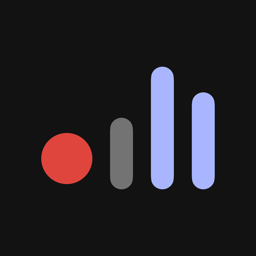

Suns
Registratore multitraccia per iPhone e iPad. [ beta in arrivo ]
Registra da 1 a 64 canali, dal microfono del telefono o da una scheda audio o un mixer USB. Un file WAV per canale, e per ogni canale un loudness meter che ti dice a colpo d'occhio se il volume è giusto.
Blu sotto la fascia, pervinca nella fascia, magenta sopra: il volume si legge dal colore.
01per chi
- Podcast e interviste: pochi microfoni, una scaletta da spuntare, marker con il nome.
- Convegni e concerti: tutti i canali del mixer, ore di registrazione anche a schermo bloccato.
- Montaggio: Broadcast WAV mono 24 bit con i marker, si aprono in qualunque programma.
02cosa fa
- Misura la loudness secondo ITU-R BS.1770 (LUFS momentaneo e a breve termine) e il picco di campione in dBFS.
- Segnala i clip, canale per canale.
- Progetti, una cartella per ogni ripresa, riascolto con i marker.
- Tutto resta sul tuo telefono: niente account, niente server.